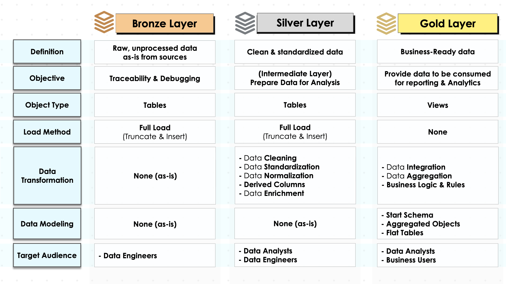
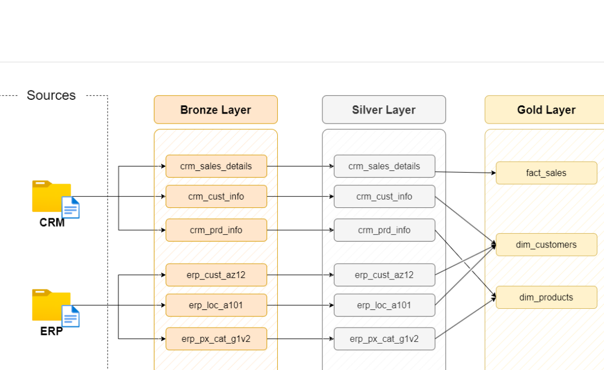
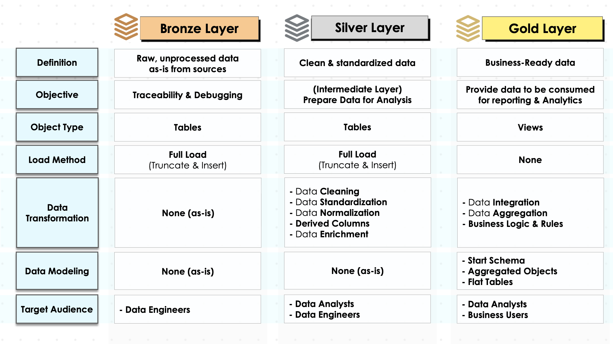
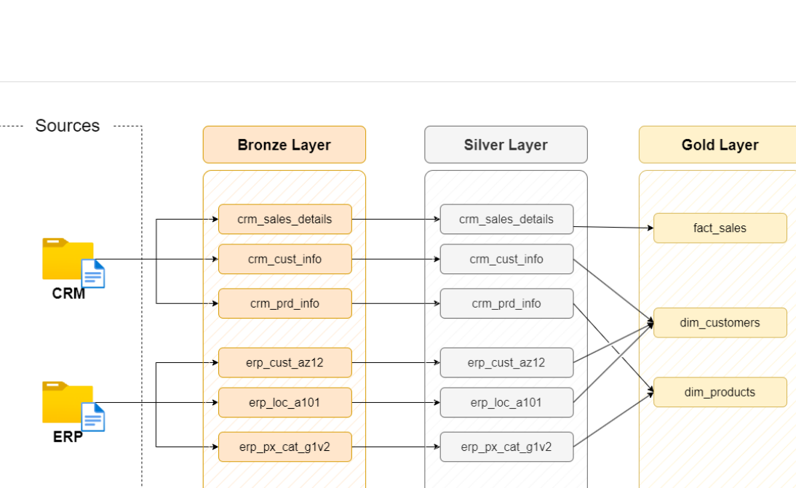
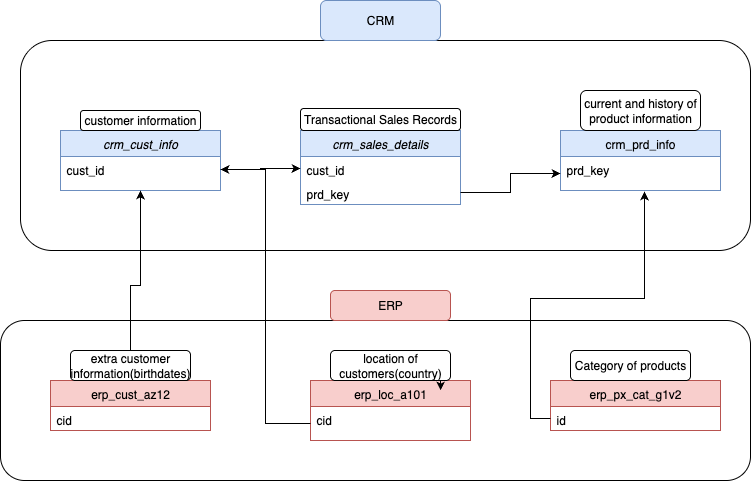
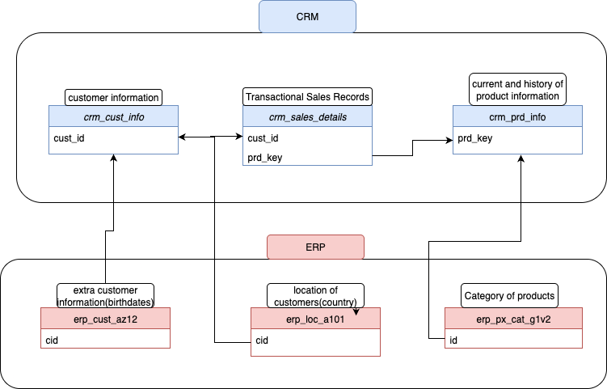

Modern Data Warehouse for Business Intelligence 🚀
This project demonstrates a full-scale, end-to-end data warehousing solution that consolidates multiple disparate data sources into a single source of truth. It solves a real business problem: enabling companies to derive actionable insights for sales, marketing, and product optimization.
Problem Solved: Businesses struggle with fragmented ERP and CRM data, causing delays in decision-making and inaccurate reporting. This data warehouse centralizes data, enforces quality, and provides actionable insights.
Key Features
- Scalable Medallion Architecture: Bronze, Silver, Gold layers ensure data quality, governance, and traceability.
- Optimized Star Schema Modeling: Fact and dimension tables designed for high-performance queries.
- Automated ETL Pipelines: SQL-based ETL scripts using Apache Airflow.
- Actionable Business Insights: Dashboards and analytical models for customer, sales, and product performance.
Architecture & Data Flow
 



Data Modeling
 

Full documentation of tables and relationships is available here.
Naming Conventions & Standards
Consistent naming ensures maintainability and scalability. Reference: naming_conventions.md
ETL Pipelines
- Extraction from multiple sources
- Data cleaning and transformation
- Loading into Bronze, Silver, and Gold layers
- Automated scheduling with Apache Airflow
Tech Stack
| Category |
Tool / Technology |
| Database |
SQL Server Express |
| IDE / Querying |
SQL Server Management Studio (SSMS) |
| Architecture |
Medallion Architecture, Star Schema |
| Orchestration |
Apache Airflow |
| Version Control |
Git & GitHub |
| Diagramming |
Draw.io |
| Documentation |
Notion |
Business Impact & Objectives
- Empower stakeholders to analyze customer behavior and improve marketing strategies.
- Track product performance to optimize inventory and pricing.
- Forecast sales trends and revenue growth accurately.
Usage / How to Run
git clone https://github.com/dvy246/data-warehouse-project.git
Steps:
- Set up SQL Server database and schemas.
- Configure Apache Airflow DAGs for ETL automation.
- Run ETL pipelines and validate data.
- Connect BI tools (Power BI / Tableau) to explore dashboards.
Contact / Author
Divy Yadav
Email: your-email@example.com
LinkedIn: linkedin.com/in/divy-yadav